Visualizations for Single-Cell Objects
Compiled: April 03, 2026
Source:vignettes/articles/SC_Visualizations.Rmd
SC_Visualizations.RmdclonalOverlay
Using the dimensional reduction graphs as a reference,
clonalOverlay() generates an overlay of the positions of
clonally-expanded cells. It highlights areas of high clonal frequency or
proportion on your UMAP or tSNE plots.
Key Parameters for clonalOverlay()
-
sc.data: The single-cell object aftercombineExpression(). -
reduction: The dimensional reduction to visualize (e.g., “umap”, “pca”). Default is “pca”. -
cut.category: The metadata variable to use for filtering the overlay (e.g., “clonalFrequency” or “clonalProportion”). -
cutpoint: The lowest clonal frequency or proportion to include in the contour plot. -
bins: The number of contours to draw.
clonalOverlay() can be used to look across all cells or
faceted by a metadata variable using facet.by. The overall
dimensional reduction will be maintained as we facet, while the contour
plots will adjust based on the facet.by variable. The
coloring of the dot plot is based on the active identity of the
single-cell object.
This visualization was authored by Dr. Francesco Mazziotta and inspired by Drs. Carmona and Andreatta and their work with ProjectTIL, a pipeline for annotating T cell subtypes.
clonalOverlay(scRep_example,
reduction = "umap",
cutpoint = 1,
bins = 10,
facet.by = "Patient") +
guides(color = "none")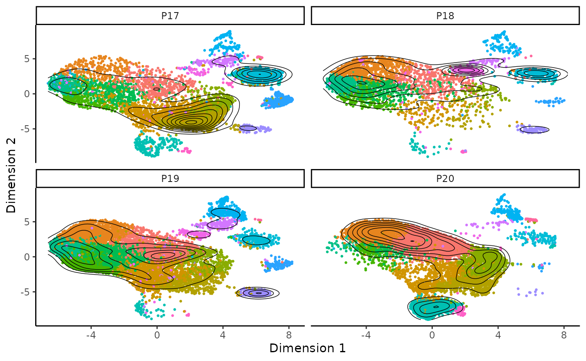
clonalNetwork
Similar to clonalOverlay(), clonalNetwork()
visualizes the network interaction of clones shared between clusters
along the single-cell dimensional reduction. This function shows the
relative proportion of clones flowing from a starting node, with the
ending node indicated by an arrow
Filtering Options for clonalNetwork()
-
filter.clones:- Select a number to isolate the clones comprising the top n number of
cells (e.g.,
filter.clones = 2000). - Select
minto scale all groups to the size of the minimum group.
- Select a number to isolate the clones comprising the top n number of
cells (e.g.,
-
filter.identity: For the identity chosen to visualize, show the “to” and “from” network connections for a single group. -
filter.proportion: Remove clones from the network that comprise less than a certain proportion of clones in groups. -
filter.graph: Remove reciprocal edges from one half of the graph, allowing for cleaner visualization.
Now, visualize the clonal network with no specific identity filter:
#ggraph needs to be loaded due to issues with ggplot
library(ggraph)
#No Identity filter
clonalNetwork(scRep_example,
reduction = "umap",
group.by = "seurat_clusters",
filter.clones = NULL,
filter.identity = NULL,
cloneCall = "aa")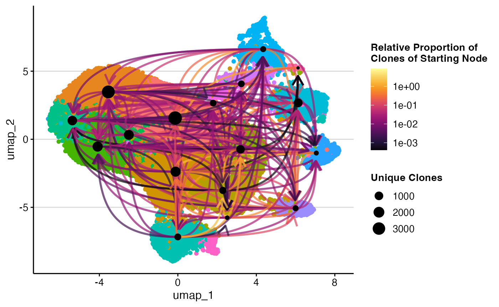
We can look at the clonal relationships relative to a single cluster
using the filter.identity parameter. For example, focusing
on Cluster 3:
#Examining Cluster 3 only
clonalNetwork(scRep_example,
reduction = "umap",
group.by = "seurat_clusters",
filter.identity = 3,
cloneCall = "aa")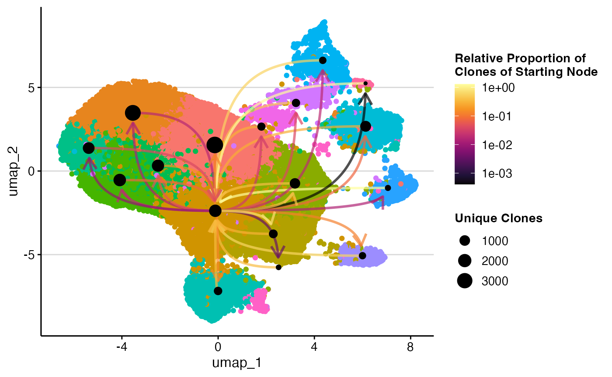
You can also use the exportClones parameter to quickly
get clones that are shared across multiple identity groups, along with
the total number of clone copies in the dataset.
shared.clones <- clonalNetwork(scRep_example,
reduction = "umap",
group.by = "seurat_clusters",
cloneCall = "aa",
exportClones = TRUE)
head(shared.clones)## # A tibble: 6 × 2
## clone sum
## <fct> <int>
## 1 CVVSDNTGGFKTIF_CASSVRRERANTGELFF 906
## 2 CAERGSGGSYIPTF_CASSDPSGRQGPRWDTQYF 140
## 3 CAVTFHYNTDKLIF_CASSQDRTGLDYEQYF 122
## 4 CAVRDDGNTGFQKLVF_CASSQDFNDGGLNIQYF 119
## 5 CARKVRDSSYKLIF_CASSDSGYNEQFF 106
## 6 CAVGAQQGGKLIF_CASSLSLSDGRHGYTF 101highlightClones
The highlightClones() function allows you to
specifically visualize the distribution of particular clonal sequences
on your single-cell dimensional reduction plots. This helps in tracking
the location and expansion of clones of interest.
Key Parameters for highlightClones()
-
cloneCall: The type of sequence to use for highlighting (e.g., “aa”, “nt”, “strict”). -
sequence: A character vector of the specific clonal sequences to highlight.
To highlight the most prominent amino acid sequences: CAERGSGGSYIPTF_CASSDPSGRQGPRWDTQYF and CARKVRDSSYKLIF_CASSDSGYNEQFF:
scRep_example <- highlightClones(scRep_example,
cloneCall= "aa",
sequence = c("CAERGSGGSYIPTF_CASSDPSGRQGPRWDTQYF",
"CARKVRDSSYKLIF_CASSDSGYNEQFF"))
Seurat::DimPlot(scRep_example, group.by = "highlight") +
guides(color=guide_legend(nrow=3,byrow=TRUE)) +
ggplot2::theme(plot.title = element_blank(),
legend.position = "bottom")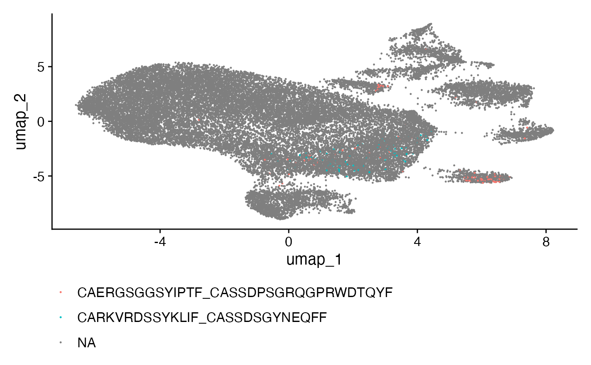
clonalOccupy
clonalOccupy() visualizes the count of cells by cluster,
categorized into specific clonal frequency ranges. It uses the cloneSize
metadata variable (generated by combineExpression()) to
plot the number of cells within each clonal expansion designation, using
a secondary variable like cluster. Credit for the idea goes to Drs.
Carmona and Andreatta.
Key Parameters for clonalOccupy() * x.axis:
The variable in the metadata to graph along the x-axis (e.g.,
“seurat_clusters”, “ident”). * label: If TRUE, includes the
number of clones in each category by x.axis variable. *
proportion: If TRUE, converts the stacked bars into
relative proportions. * na.include: If TRUE, visualizes NA
values.
To visualize the count of cells by seurat_clusters based
on cloneSize groupings:
clonalOccupy(scRep_example,
x.axis = "seurat_clusters")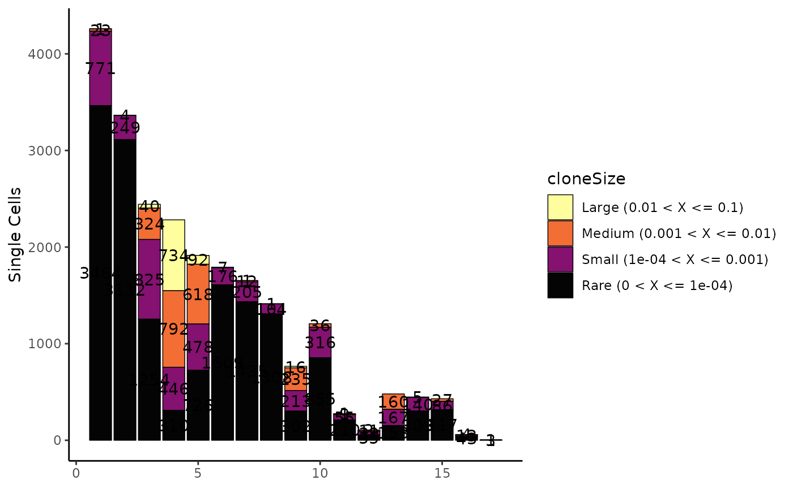
To visualize the proportion of cells by ident (active
identity), without labels:
clonalOccupy(scRep_example,
x.axis = "ident",
proportion = TRUE,
label = FALSE)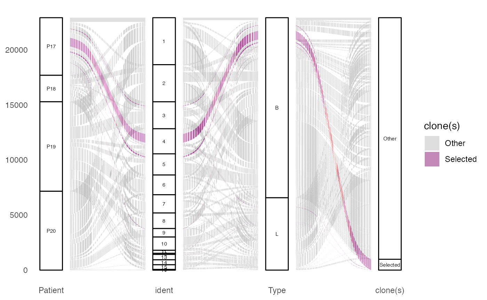
alluvialClones
After the metadata has been modified with clonal information,
alluvialClones() allows you to look at clones across
multiple categorical variables, enabling the examination of the
interchange between these variables. Because this function produces a
graph with each clone arranged by called stratification, it may take
some time depending on the size of the repertoire.
Key Parameters for alluvialClones()
-
y.axes: The columns that will separate the proportional visualizations. -
color: The column header or clone(s) to be highlighted. -
facet: The column label to separate facets. -
alpha: The column header to have gradated opacity. -
top.clones: Show only the top N clones by frequency. -
min.freq: Minimum frequency threshold for displaying flows. -
highlight.clones: Character vector of specific clone sequences to highlight. -
stratum.width: Control the width of stratum bars. -
flow.alpha: Control the transparency of flows. -
order.strata: Named list to specify the order of levels within each stratum.
To visualize clonal flow across “Patient”, “ident”, and “Type”, highlighting specific amino acid clones:
alluvialClones(scRep_example,
clone.call = "aa",
y.axes = c("Patient", "ident", "Type"),
color = c("CVVSDNTGGFKTIF_CASSVRRERANTGELFF", "NA_CASSVRRERANTGELFF")) +
scale_fill_manual(values = c("grey", colorblind_vector[3]))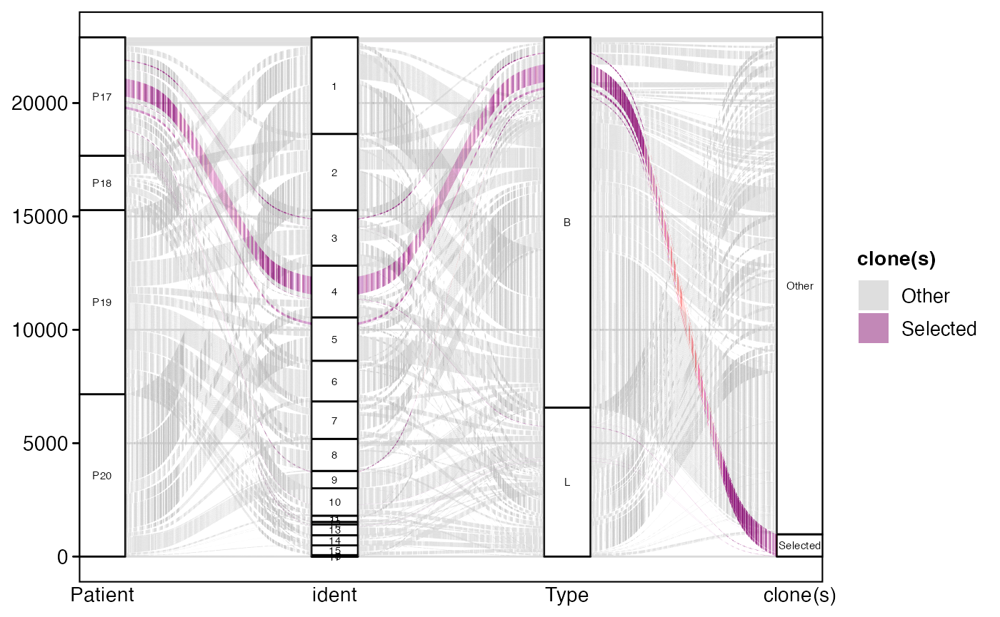
To visualize clonal flow across “Patient”, “ident”, and “Type”, coloring by “ident”:
alluvialClones(scRep_example,
clone.call = "gene",
y.axes = c("Patient", "ident", "Type"),
color = "ident")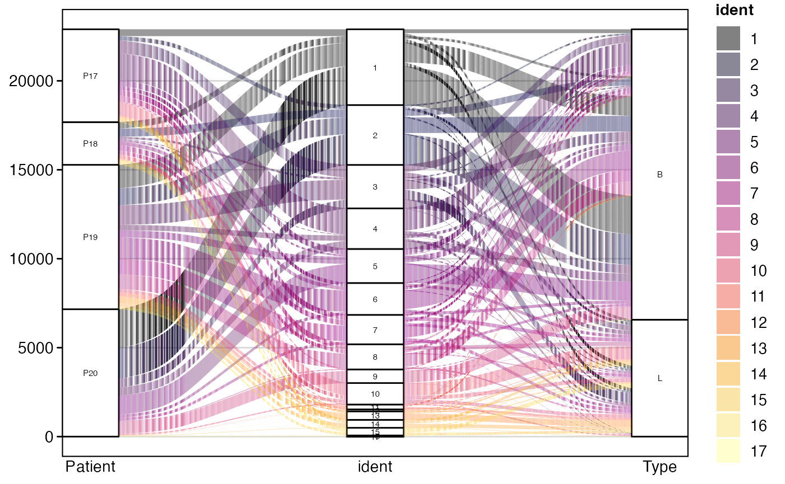
Filtering and Highlighting Clones
For large datasets, it can be useful to filter to only the most
frequent clones using top.clones:
alluvialClones(scRep_example,
clone.call = "aa",
y.axes = c("Patient", "ident"),
top.clones = 25,
color = "ident")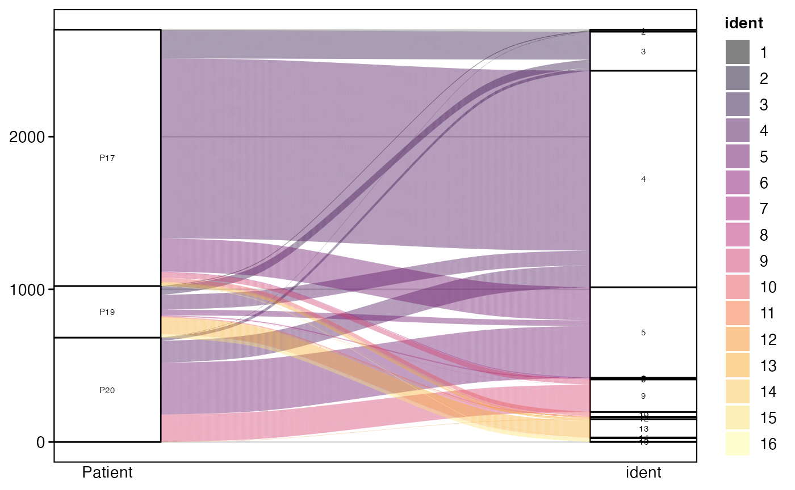
To highlight specific clones of interest while showing all others in gray:
alluvialClones(scRep_example,
clone.call = "aa",
y.axes = c("Patient", "ident", "Type"),
highlight.clones = c("CVVSDNTGGFKTIF_CASSVRRERANTGELFF"),
highlight.color = "red")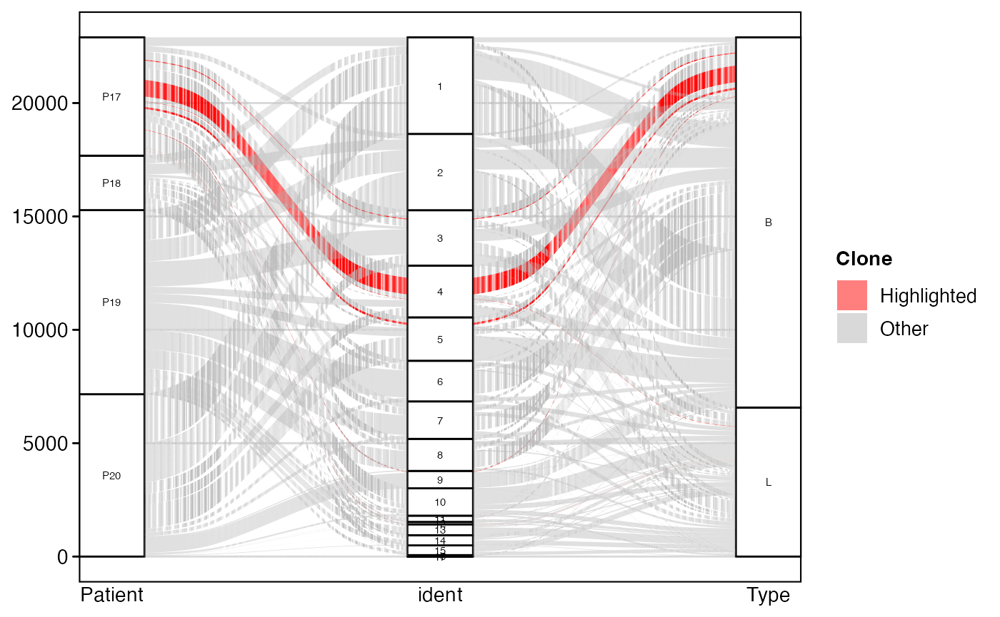
Customizing Visual Appearance
Control the appearance with stratum.width,
flow.alpha, and label.size:
alluvialClones(scRep_example,
clone.call = "gene",
y.axes = c("Patient", "ident"),
color = "ident",
stratum.width = 0.3,
flow.alpha = 0.7,
label.size = 3)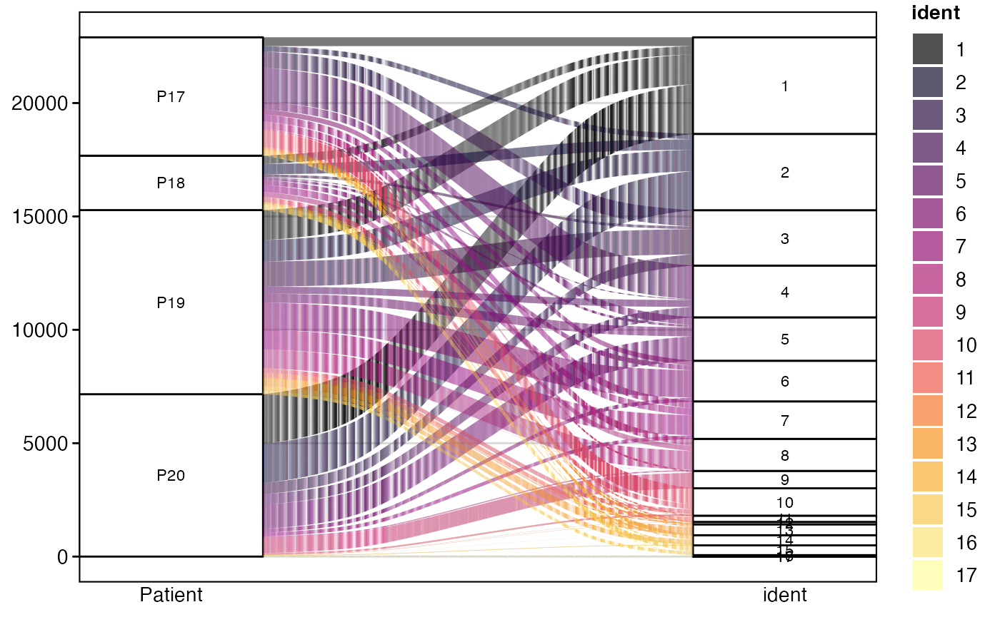
alluvialClones() provides a visual representation of
clonal distribution and movement across multiple categorical
annotations. It is particularly effective for tracking how specific
clones or clonal groups transition between different states, tissues, or
cell types, offering a dynamic perspective on immune repertoire
evolution and function.
getCirclize and vizCirclize
Like alluvial graphs, we can also visualize the interconnection of
clusters using chord diagrams from the circlize R
package. There are two approaches: getCirclize()
returns data for custom circlize plotting, while
vizCirclize() provides a convenient wrapper for quick
visualizations.
Quick Visualization with vizCirclize
The simplest way to create a chord diagram is with
vizCirclize(), which handles all the circlize setup
automatically:
library(circlize)
vizCirclize(scRep_example,
group.by = "seurat_clusters")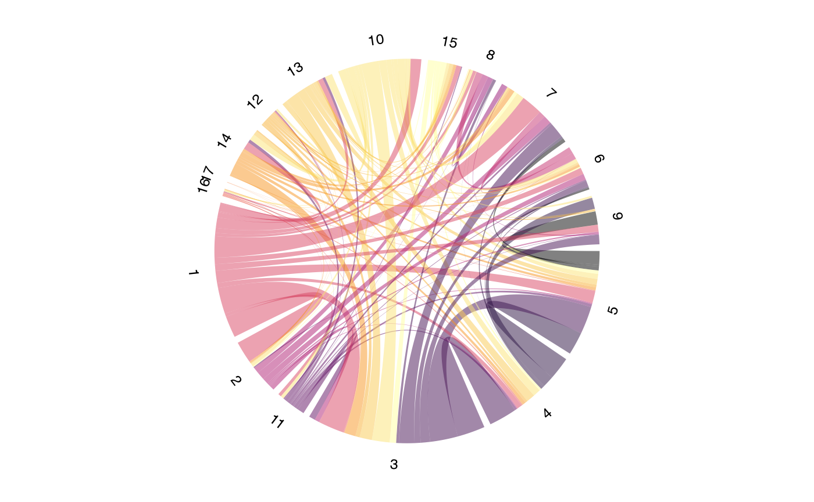
For directional flow showing clonal migration patterns:
vizCirclize(scRep_example,
group.by = "seurat_clusters",
directional = TRUE)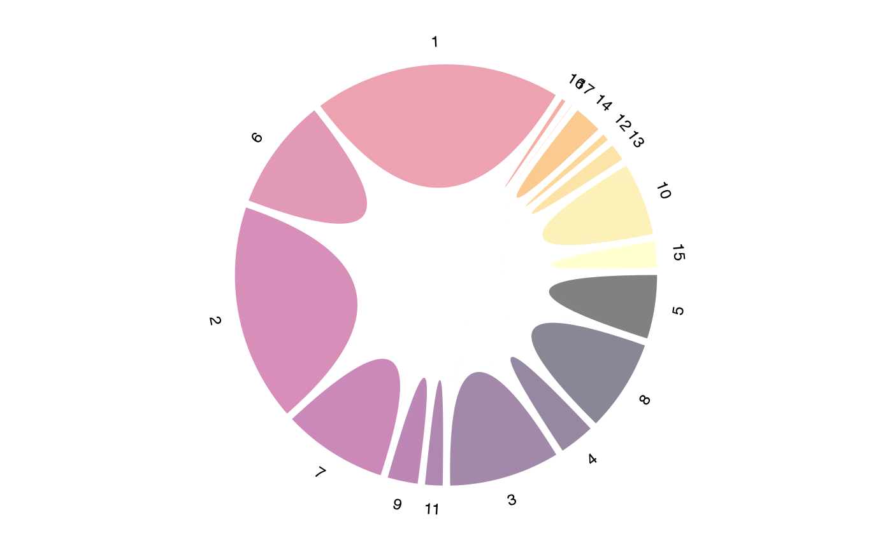
Advanced Control with getCirclize
For more control over the visualization, use
getCirclize() to generate the data and then customize the
circlize plot manually.
Key Parameters for getCirclize()
-
group.by: Single column or vector of columns for hierarchical grouping. -
method: Calculation method -"unique"(count),"jaccard","overlap", or"abundance". -
proportion: IfTRUE, normalizes the relationship by proportion. -
symmetric: IfFALSE, returns directional flow data. -
include.metadata: IfTRUE, returns rich output with sector statistics. -
min.shared: Minimum shared clones to include a link. -
top.links: Keep only the top N links by value.
To get data for a chord diagram showing shared clones between
seurat_clusters:
library(scales)
circles <- getCirclize(scRep_example,
group.by = "seurat_clusters")
#Just assigning the normal colors to each cluster
grid.cols <- hue_pal()(length(unique(scRep_example$seurat_clusters)))
names(grid.cols) <- unique(scRep_example$seurat_clusters)
#Graphing the chord diagram
chordDiagram(circles, self.link = 1, grid.col = grid.cols)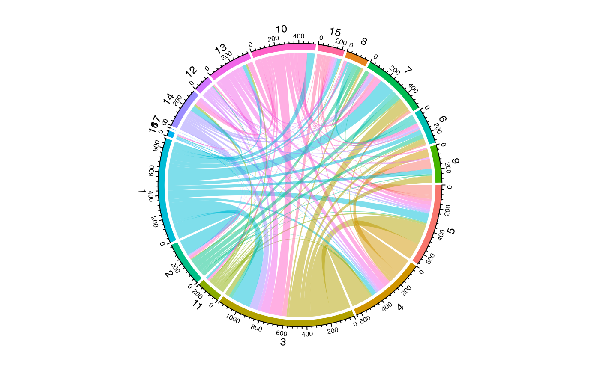
Multi-Level Hierarchical Chord Diagrams
One powerful feature is the ability to create hierarchical groupings
by passing multiple columns to group.by. This creates
compound sector labels that can be used for multi-track annotations:
# Get hierarchical data with metadata
result <- getCirclize(scRep_example,
group.by = c("Patient", "seurat_clusters"),
include.metadata = TRUE)
# The result contains links, sector statistics, and suggested colors
head(result$links)## from to value
## 1 P17_5 P17_5 0
## 2 P17_5 P17_8 1
## 3 P17_4 P17_5 42
## 4 P17_3 P17_5 46
## 5 P17_11 P17_5 5
## 6 P17_5 P17_9 12
head(result$sectors)## sector n.cells n.clones n.shared expansion Patient seurat_clusters
## 1 P17_1 408 361 15675 0.1151961 P17 1
## 2 P17_10 892 628 15675 0.2959641 P17 10
## 3 P17_11 137 51 15675 0.6277372 P17 11
## 4 P17_12 472 39 15675 0.9173729 P17 12
## 5 P17_13 99 55 15675 0.4444444 P17 13
## 6 P17_14 183 154 15675 0.1584699 P17 14
# Use for chord diagram with built-in colors
circos.clear()
chordDiagram(result$links,
grid.col = result$colors,
self.link = 1)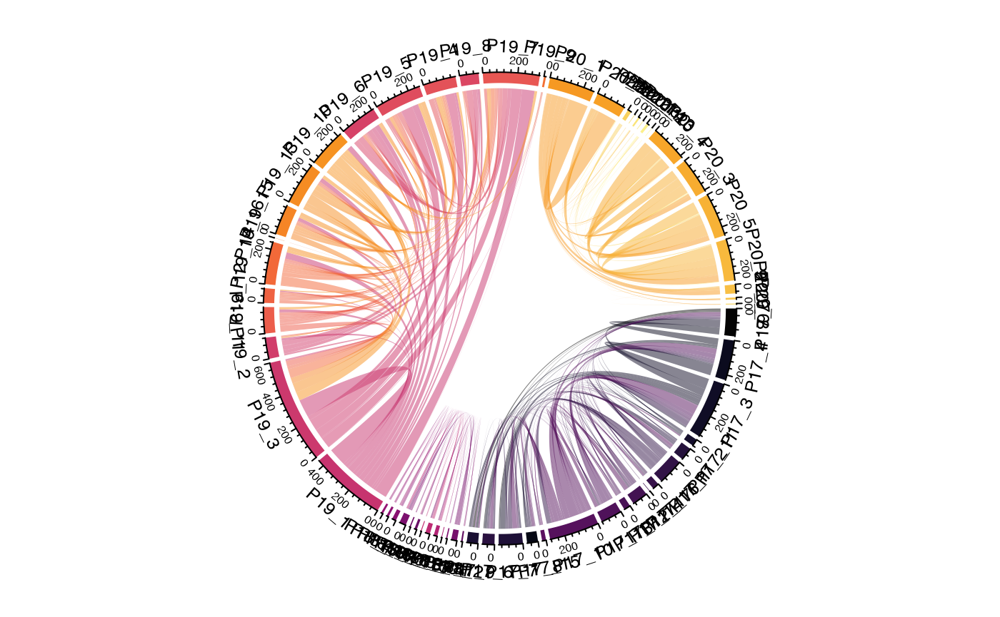
Using Different Overlap Methods
The method parameter allows different ways to quantify
relationships:
# Jaccard similarity - good for comparing repertoire overlap
circles_jaccard <- getCirclize(scRep_example,
group.by = "seurat_clusters",
method = "jaccard")
circos.clear()
chordDiagram(circles_jaccard, self.link = 1)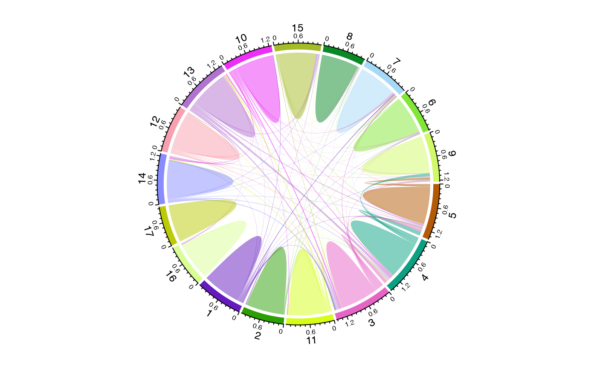
Directional Flow Analysis
Setting symmetric = FALSE enables directional analysis
showing what proportion of each sector’s clones are found in other
sectors:
subset <- subset(scRep_example, Type == "L")
circles <- getCirclize(subset, group.by = "ident", symmetric = FALSE)
grid.cols <- scales::hue_pal()(length(unique(subset@active.ident)))
names(grid.cols) <- levels(subset@active.ident)
circos.clear()
chordDiagram(circles,
self.link = 1,
grid.col = grid.cols,
directional = 1,
direction.type = "arrows",
link.arr.type = "big.arrow")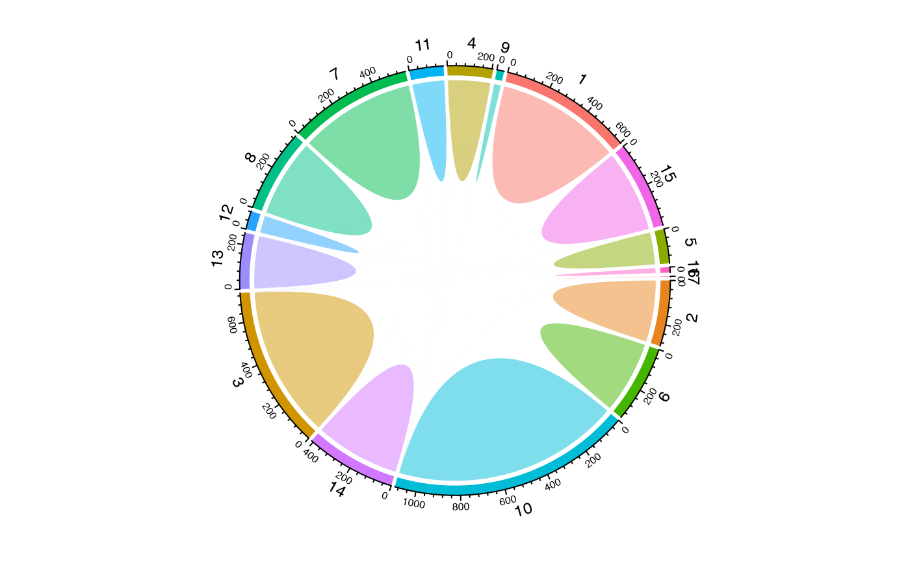
Filtering Links
For cleaner visualizations, filter out weak connections:
# Keep only links with at least 5 shared clones
circles_filtered <- getCirclize(scRep_example,
group.by = "seurat_clusters",
min.shared = 5)
circos.clear()
chordDiagram(circles_filtered, self.link = 1)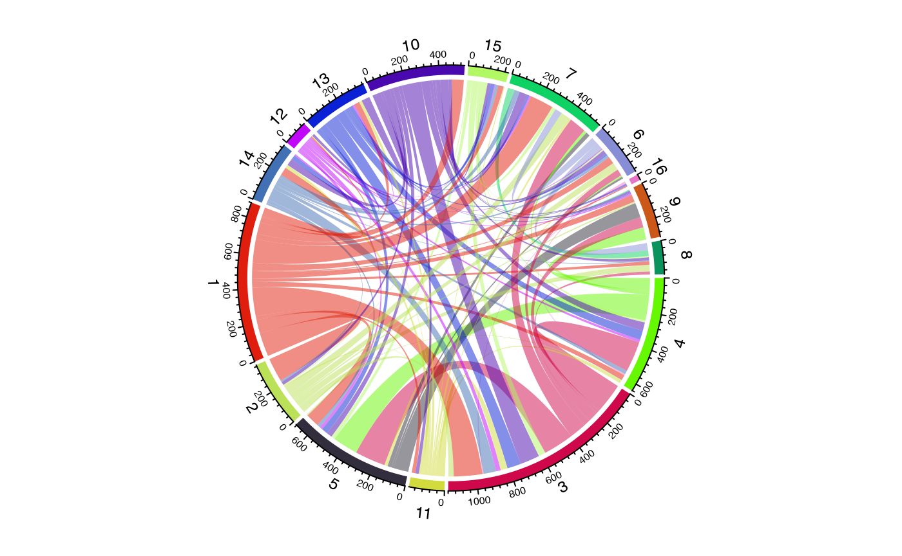
getCirclize() and vizCirclize() facilitate
the creation of visually striking and informative chord diagrams to
represent shared clonal relationships between distinct groups within
your single-cell data. By providing flexible ways to quantify and format
clonal overlap, they enable researchers to effectively illustrate
complex clonal connectivity patterns, which are crucial for
understanding immune communication and migration.
Next Steps
- Quantifying Clonal Bias - Measure clonal expansion bias across clusters and conditions.
- Clustering by Edit Distance - Group clones by sequence similarity beyond exact matches.
- FAQ - Common questions about color palettes, plot customization, and data export.